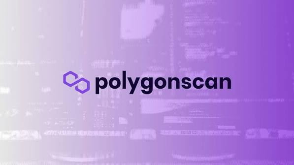

Drag & Drop Website Builder
Blockchain networks are designed to make transactions transparent, but the information stored on-chain can be difficult to understand without the right tools. Every transfer, smart-contract interaction, token movement, and block is recorded on the blockchain. A blockchain explorer makes this information easier to search, analyze, and verify.
PolygonScan is a blockchain explorer focused on the Polygon network. It allows users to search and examine addresses, transactions, blocks, tokens, smart contracts, and other on-chain activity. Its interface is particularly useful for people who want to verify transactions or investigate activity on Polygon without relying solely on a cryptocurrency wallet.
PolygonScan also provides developer-oriented infrastructure. Its current API documentation describes access to Polygon PoS balances, transactions, tokens, contracts, logs, gas information, and other blockchain data through the Etherscan API infrastructure. Polygon PoS Mainnet uses chain ID 137, while the Polygon PoS testnet uses chain ID 80002.
This guide explains what PolygonScan is, how it works, its major features, how to track transactions, explore wallets, verify smart contracts, understand gas fees, and use the platform more effectively.
PolygonScan is a blockchain explorer for the Polygon network. It provides a searchable interface for viewing publicly available blockchain information.
Unlike a centralized exchange, PolygonScan does not function as a conventional trading platform where users deposit funds for the company to hold. Instead, it provides access to information recorded on the blockchain.
A user can enter a wallet address, transaction hash, token contract, or block number into PolygonScan's search interface and retrieve corresponding on-chain information.
For example, if someone sends tokens to another wallet, the transaction produces a unique transaction hash. That hash can be entered into PolygonScan to examine the transaction's status, sender, recipient, token movement, and other available information.
This makes PolygonScan particularly useful when a wallet application provides limited transaction details.
Blockchains are transparent by design, but transparency is only useful when people can interpret the information.
A raw blockchain contains enormous amounts of technical data. Users need specialized interfaces to understand what happened.
PolygonScan organizes blockchain activity into categories such as:
Transactions
Wallet addresses
Blocks
Token transfers
Smart contracts
NFTs
Internal transactions
Gas information
Contract events
Developer data
This makes it possible for both beginners and experienced blockchain users to investigate Polygon activity without running their own blockchain node or indexer.
One of PolygonScan's most common uses is transaction verification.
When a user sends cryptocurrency or interacts with a decentralized application, the wallet generally provides a transaction hash. This hash can be searched on PolygonScan.
A transaction page can provide information such as the transaction status, block confirmation, sender, recipient, value transferred, transaction fee, and token transfers.
A successful transaction indicates that the relevant blockchain execution was completed. A failed transaction, meanwhile, means the intended smart-contract execution did not complete successfully.
PolygonScan's support documentation also explains that when a transaction is marked as failed, the funds intended for the transfer are generally not deducted as the transfer itself, although gas costs associated with executing the transaction can still be charged.
This distinction is useful when troubleshooting unsuccessful transactions.
PolygonScan can also be used to investigate blockchain addresses.
When an address is entered, users can view information associated with that public address, including its transactions and token activity.
This can be useful for checking:
Current token balances
Transaction history
Token transfers
Contract interactions
NFT transfers
Internal transactions
Address labels
Other publicly available blockchain information
Because blockchain addresses are public, anyone can potentially examine their activity through an explorer.
However, users should remember that an address page does not necessarily reveal the real-world identity of the person controlling the wallet.
Polygon supports a large number of tokens, and PolygonScan provides individual pages for token contracts.
A token page can provide information such as the token's contract address, transfers, holders, supply information, and other available details.
This can be particularly helpful when several tokens have similar names or symbols.
Users should pay close attention to the contract address, rather than relying only on the token's name or logo.
PolygonScan has a token reputation system and a blue-checkmark feature for certain projects. Its support documentation states that the blue checkmark can indicate a token or project of public interest, while also emphasizing that the feature does not constitute an endorsement and users should perform their own research.
Therefore, visual indicators on an explorer should never be treated as a guarantee that a token is legitimate or safe.
Smart contracts are among the most important components of blockchain ecosystems.
A decentralized application may use one or several smart contracts to perform swaps, lending, staking, token transfers, or other operations.
PolygonScan allows developers to publish and verify smart-contract source code. Verification can make it easier for users and developers to inspect how a contract works rather than seeing only compiled contract data.
PolygonScan also provides a process for contract-address ownership verification. According to its support documentation, verified ownership allows the contract owner to update token information and address name tags associated with the contract.
For developers, contract verification can improve transparency. For users, it can make contract research easier.
However, verified source code does not automatically mean that a smart contract is safe. Users still need to understand the contract's functions, permissions, upgrade mechanisms, and other risks.
Every transaction on a blockchain requires computational resources.
On Polygon PoS, transactions require gas, and PolygonScan provides tools for monitoring gas conditions.
PolygonScan's support documentation explains that gas fees are associated with the computational work required to process transactions and smart-contract interactions. It also provides a Gas Tracker designed to analyze network traffic and provide gas-price recommendations.
The basic relationship can be expressed as:
Gas Fee = Gas Price × Gas Used
Simple transfers generally require less computational work than complex smart-contract interactions.
This is why interacting with a decentralized application can consume more gas than simply sending a token from one wallet to another.
Users should make sure they maintain enough of the network's required gas asset in their wallet before attempting transactions.
PolygonScan is not only a research tool for everyday users. It also provides blockchain data infrastructure for developers.
The current Polygon PoS API documentation describes endpoints covering balances, transactions, tokens, contracts, logs, blocks, gas information, token holders, transaction receipts, and other blockchain data.
Developers can use this information to build applications such as:
Portfolio trackers
Accounting systems
Blockchain analytics platforms
Wallet applications
Token dashboards
NFT tools
Compliance systems
Transaction monitoring services
The Etherscan API infrastructure currently supports Polygon PoS through the same general API architecture used across many supported EVM chains.
This is useful for development teams that want to expand an application from one blockchain to multiple EVM-compatible networks.
Another useful feature is PolygonScan's address watch list.
Registered users can add addresses to a watch list and receive email notifications when incoming or outgoing transactions involving those addresses occur. PolygonScan's support documentation identifies the Watch List as one of its personal-use features.
This can be useful for monitoring a personal wallet, a public project address, a treasury wallet, or another blockchain address of interest.
Because the feature relies on publicly visible blockchain activity, it does not give users access to private wallet information.
Blockchain explorers sometimes provide additional labels to make addresses easier to understand.
PolygonScan supports certain address name tags and blockchain-domain integrations. For example, its documentation describes support for displaying Unstoppable Domains as name tags.
However, PolygonScan specifically warns users that a blockchain domain name does not necessarily prove that an address belongs to the person or organization associated with the name.
This is an important security lesson.
A familiar name or label should never replace verification of an address.
Polygon is used for numerous NFT projects, marketplaces, games, and digital-collectible applications.
PolygonScan can help users examine NFT transfers and related blockchain transactions.
For developers, the Polygon API infrastructure includes support for ERC-721 and ERC-1155 token transfers, allowing applications to retrieve NFT-related information such as token IDs, counterparties, and timestamps.
NFT users can therefore use blockchain explorers to independently verify whether a transfer occurred and identify the transaction associated with it.
Blockchain explorers are particularly valuable when something goes wrong.
For example, a user might wonder:
Why hasn't my transaction appeared?
Did my transfer succeed?
What address received the tokens?
How much gas did I pay?
Which smart contract did I interact with?
Did a token actually arrive?
Why did a transaction fail?
Instead of relying entirely on a wallet interface, the user can search the transaction or address on PolygonScan.
This creates an independent way to verify blockchain activity.
PolygonScan provides several important benefits.
Transparency
It gives users access to publicly recorded Polygon blockchain information.
Easy Transaction Verification
Transaction hashes can be searched to confirm status and transfer details.
Token Research
Users can inspect token contracts, transfers, holders, and related information.
Smart-Contract Visibility
Verified contracts can make source-code inspection easier.
Developer Infrastructure
APIs provide structured Polygon blockchain data for applications and analytics platforms.
Monitoring Tools
Features such as address watch lists allow users to monitor selected wallet activity.
PolygonScan is a powerful information tool, but it should not be treated as a guarantee of safety.
A token appearing on PolygonScan does not mean it is legitimate.
Similarly, a verified smart contract does not automatically mean the contract is free of vulnerabilities.
Users should also be careful when clicking links or interacting with addresses displayed on blockchain explorers.
Scammers can create tokens with names and symbols that resemble legitimate projects. PolygonScan's own documentation warns users to conduct independent research before interacting with token contracts.
Users should verify contract addresses through official project sources, carefully review wallet transactions, and never reveal private keys or recovery phrases.
As blockchain ecosystems become increasingly complex, blockchain explorers are likely to remain important infrastructure.
Polygon's expanding applications, token markets, NFTs, decentralized finance, and smart contracts generate large amounts of on-chain data.
Explorers such as PolygonScan make that information accessible to ordinary users while also providing structured data for developers.
The continued expansion of API functionality and multichain blockchain infrastructure also points toward a future where developers can use familiar tools to build applications across many EVM-compatible networks. The current Etherscan API documentation describes support for more than 60 chains, including Polygon PoS.
PolygonScan is more than a website for checking whether a cryptocurrency transaction succeeded. It is a comprehensive blockchain explorer that provides access to Polygon's publicly available on-chain information.
Users can search transactions, inspect wallet addresses, investigate tokens, examine smart contracts, monitor gas activity, research NFT transfers, and track selected addresses. Developers can also access Polygon blockchain data through APIs for applications ranging from portfolio trackers to accounting and analytics systems.
The platform's biggest strength is transparency. Instead of depending entirely on a wallet or centralized service, users can independently inspect information recorded on the blockchain.
At the same time, blockchain transparency does not eliminate financial or security risks. Users must still verify token contracts, understand smart-contract interactions, protect their wallet credentials, and conduct independent research.
For anyone using the Polygon ecosystem, learning how to navigate PolygonScan is a valuable Web3 skill. Whether the goal is confirming a transaction, researching a token, analyzing an address, or developing a blockchain application, PolygonScan provides an important window into activity occurring on the Polygon network.
Drag & Drop Website Builder